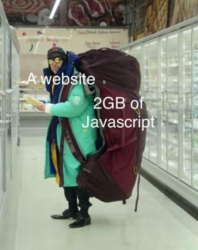

00. Link - 10 HTML Elements You Didn't Know You Needed
01. Link - All you need to know about hyphenation in CSS
02. Link - The shortest way to conditional insert properties into an object literal
03. Link - A Future Without Webpack
04. Link - Complete Node js Project Setup from Docker to Testing
05. Link - How we built the fastest conference website in the world
06. Link - Responsible JavaScript: Part I
07. Link - Advanced Map Shading
08. Link - Experimenting with the Streams API
09. Link - Untrusted – a user JavaScript adventure game
10. Link - WebGL2 Fundamentals
